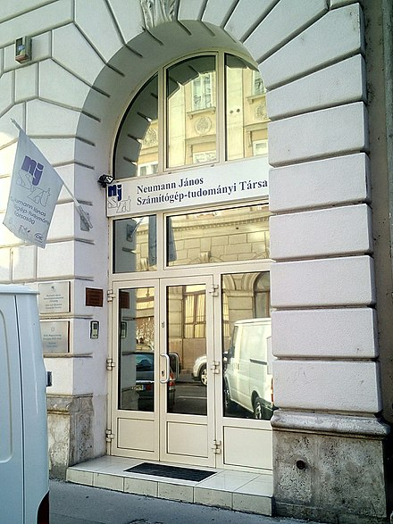

Hometown
Von Neumann was born in Budapest, Kingdom of Hungary, which was then part of the Austro-Hungarian Empire.

Von Neumann's birthplace, at 16 Báthory Street, Budapest.
He was the eldest of three brothers; his two younger siblings were Mihály (English: Michael von Neumann; 1907–1989) and Miklós (Nicholas von Neumann, 1911–2011). His father, Neumann Miksa (Max von Neumann, 1873–1928) was a banker, who held a doctorate in law. He had moved to Budapest from Pécs at the end of the 1880s. Miksa's father and grandfather were both born in Ond, Zemplén County, northern Hungary. John's mother was Kann Margit (English: Margaret Kann); her parents were Jakab Kann and Katalin Meisels. Three generations of the Kann family lived in spacious apartments above the Kann-Heller offices in Budapest; von Neumann's family occupied an 18-room apartment on the top floor.
In 1913, Emperor Franz Joseph elevated his father to the nobility for his service to the Austro-Hungarian Empire. The Neumann family thus acquired the hereditary appellation Margittai, meaning of Margitta (today Marghita, Romania). The family had no connection with the town; the appellation was chosen in reference to Margaret, as was that chosen coat of arms depicting three marguerites. Neumann János became margittai Neumann János (John Neumann de Margitta), which he later changed to the German Johann von Neumann.